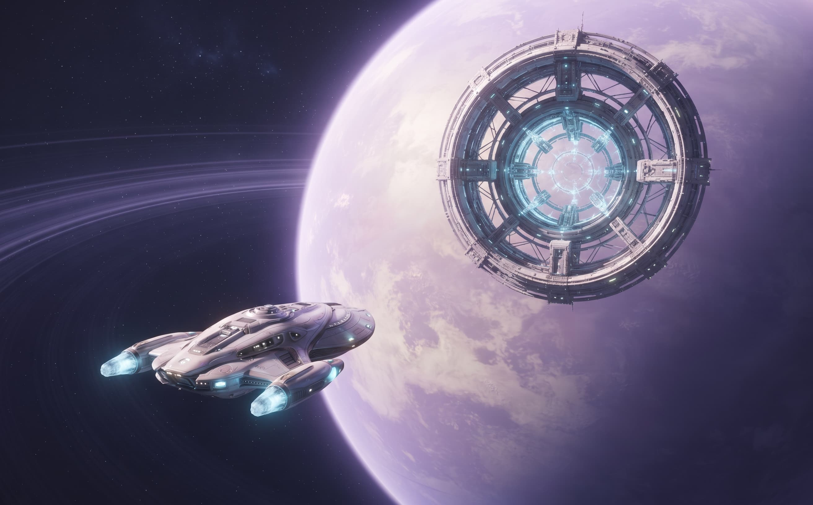
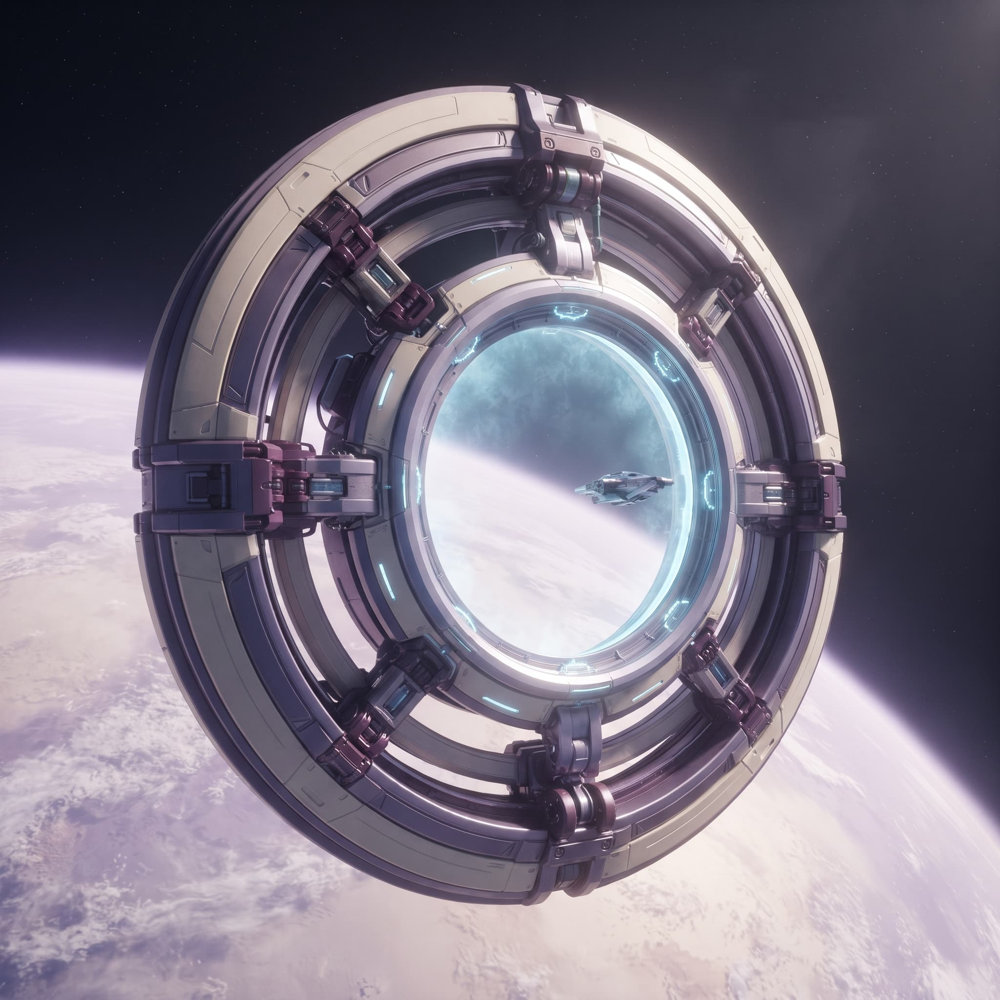
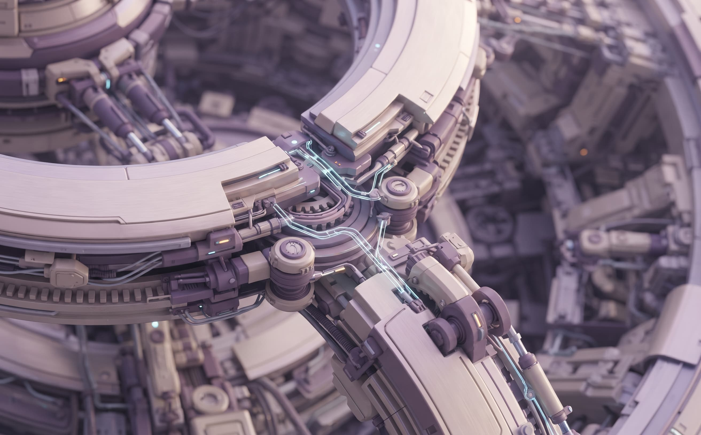
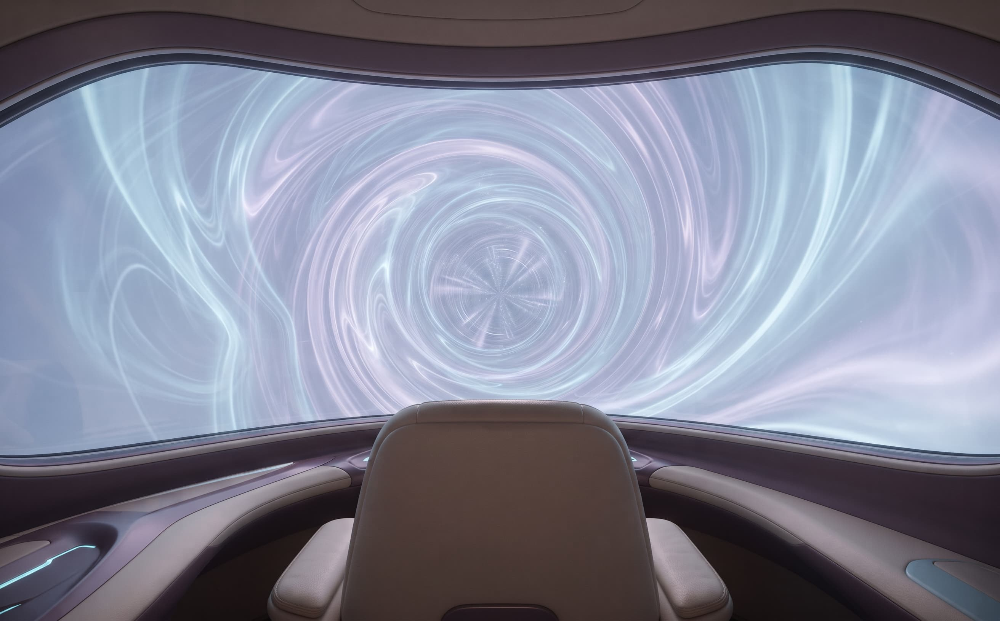
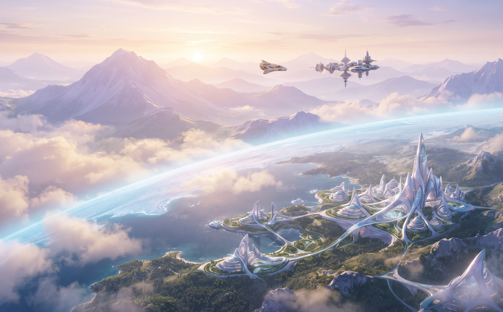

Docking approach
Follow the arrival guide. The gate helps your ship find the right approach before you begin.
Beyond the familiar.
Products / Transport / Orbital Gate
THE SHORT WAY TO YOUR NEXT WORLD.
An orbital transport portal that connects your ship to another world in eight seconds. For visits, new beginnings and all the journeys in between.
Orbit Credits are fictional. Try it in our demo store.

The journey / Four moments
One seamless passage. From first approach to a whole new horizon.

Follow the arrival guide. The gate helps your ship find the right approach before you begin.

Your ship and the gate sync automatically. A clear status display tells you when everything is ready.

Step into the connection. Eight seconds later, a different world is waiting on the other side.

Arrive at a comfortable pace, ready to dock. Your day carries on somewhere new.
Precision, without compromise
The details behind a smooth journey. Orbital Gate checks the connection before every departure.
Your next crossing
Thinking about your first crossing? Ask us about setup, destinations or choosing the right connection for your ship.